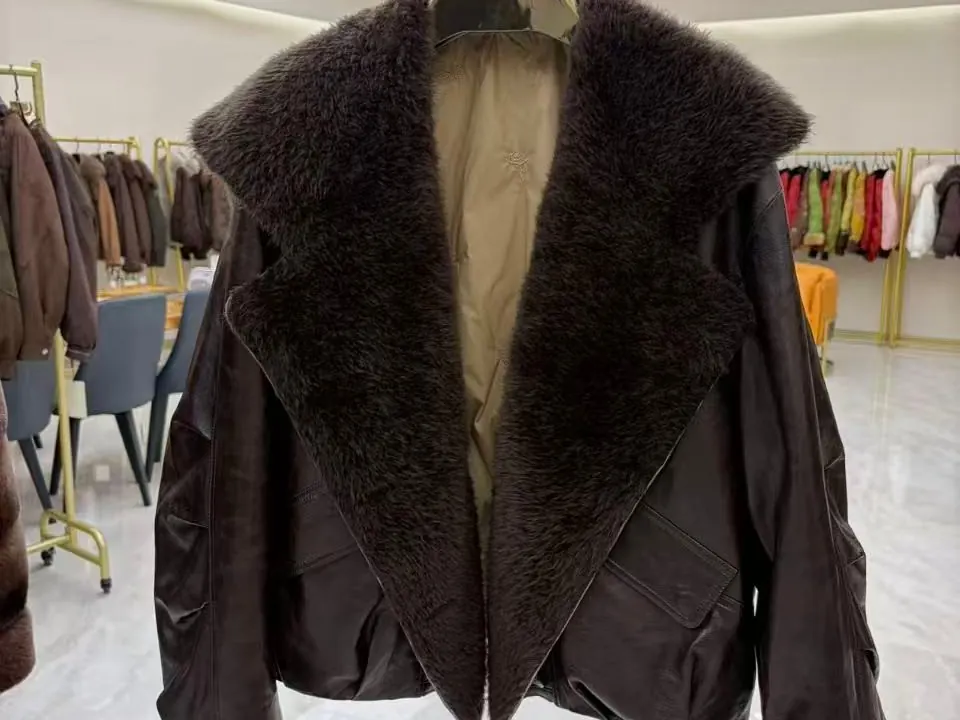
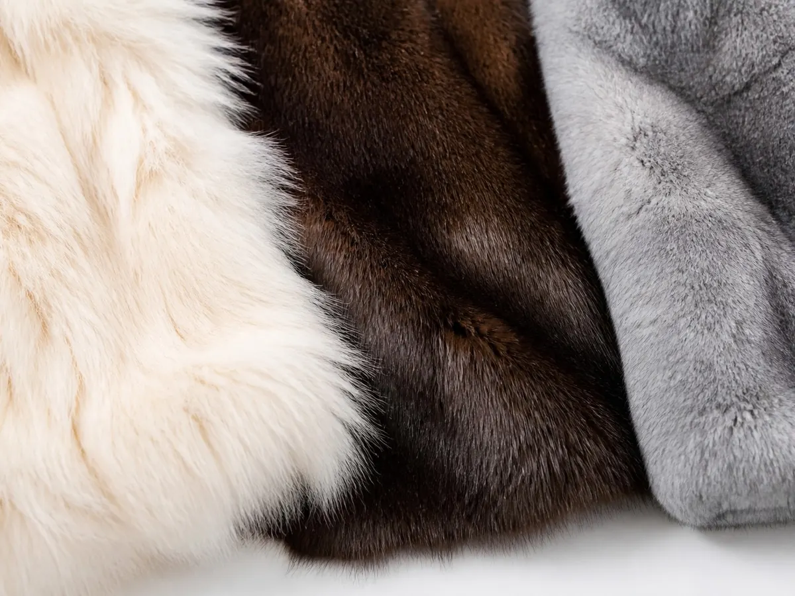
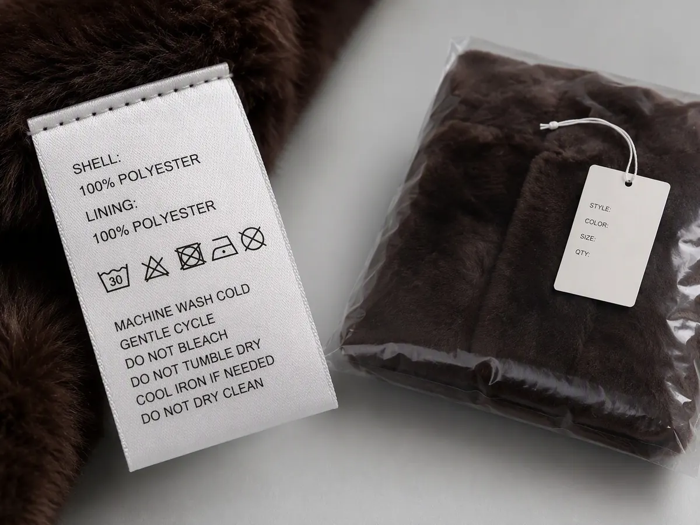
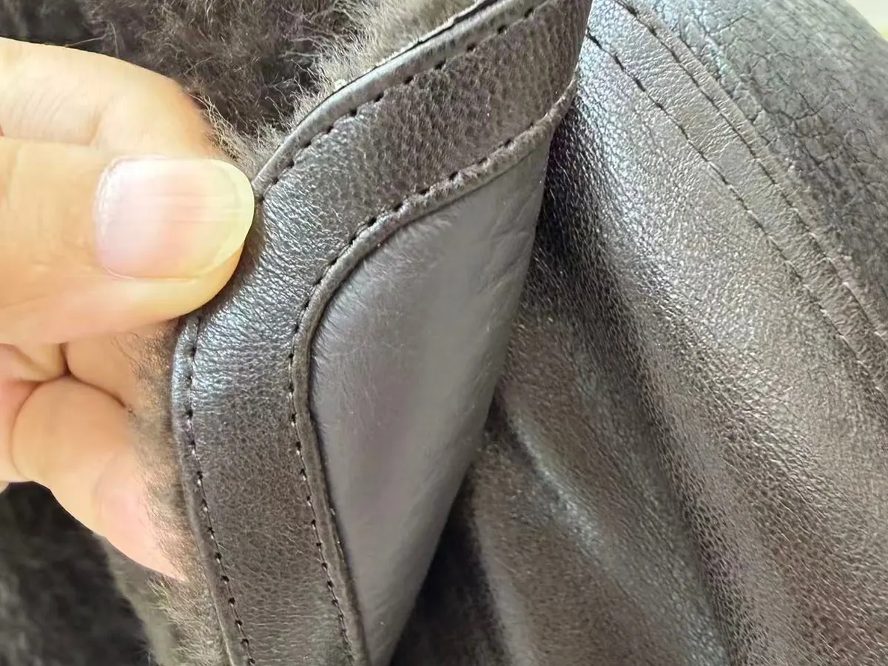
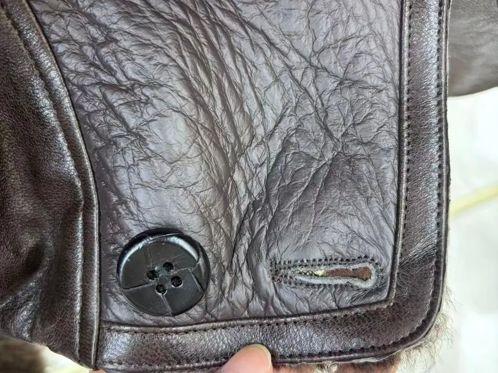

How to Order Custom Fur Fabric from a China Supplier: MOQ, Sampling & Lead Time Guide

Finished fur jacket on display at Umay's showroom — fox fur collar, leather body, custom sizing available.
If you've been scrolling Reddit threads or messaging suppliers on Alibaba trying to figure out how to actually place a custom fur fabric order from China — you already know how confusing it gets.
"Is the MOQ 500 meters or 50?" "Can they do my label?" "Will I get ghosted after asking for samples?"
The answers depend on your supplier. This guide tells you exactly what a professional fur material supplier should be able to offer — and what questions to ask before you commit to anything.
Whether you're a fashion label, a coat manufacturer, or a startup building your first private label collection, here's what to expect when ordering custom fox fur, rabbit fur, or mink fabric from China.
Step 1: What Can Actually Be Customized?
A lot of suppliers will say "yes" to everything upfront and deliver something generic. Here's what a proper custom order should cover — and what we offer at Umay:
Fur Type (Species)
You're not limited to one material. Common options include:

Fox fur, mink, and rabbit fur swatches — three of the species available for custom orders at Umay.
| Fur Type | Best For | Characteristics |
|---|---|---|
| Fox Fur | Coats, collars, trim | Long pile, fluffy, high visual impact |
| Rabbit Fur | Linings, accessories, knitwear trim | Soft, lightweight, versatile |
| Mink Fur | Premium coats, luxury accessories | Dense, short pile, silky finish |
| Raccoon Fur | Trim, hoods, statement pieces | Thick, durable, bold texture |
Each species has different sourcing seasons, price points, and processing requirements. Tell your supplier your end product — they'll help you match the right material.
Size & Panel Dimensions
Need fabric panels cut to a specific size for your production line? We support custom cutting to your spec — reducing waste and prep time on your end.
Care Labels (Water Wash Labels / Woven Labels)

Woven care label and private label packaging — ready for EU and US market compliance requirements.
Your brand's care label and composition label can be sewn directly into the material or provided as a separate lot. This is critical for selling into EU and US markets where labeling compliance (fiber content, country of origin, care instructions) is legally required.
Packaging
Whether you need poly bags with your brand name, hang tags, or retail-ready packaging, private label packaging is available for bulk orders. This lets you receive goods ready to forward to customers or retail partners without extra prep.
Step 2: MOQ — Lower Than You Think
One of the biggest fears first-time buyers have is hitting a minimum order quantity wall.
Good news: our MOQ is designed for growing brands, not just factory-scale buyers.
We work with brands at various stages:
- Small batch trial orders to test a new material or colorway
- Mid-size seasonal orders for established collections
- Large volume blanket orders with staggered delivery
How to approach MOQ conversations with any supplier:
- Be specific about your product — "I need fox fur trim panels for hood linings, approx 20cm × 60cm each" gets a better answer than "I want fox fur"
- Show your roadmap — If you're ordering small now but growing, say so. Suppliers invest in relationships, and a buyer with a plan gets better terms
- Combine species in one shipment — ordering fox fur + rabbit fur together can unlock better terms than two separate small orders
- Ask what's in stock — in-stock materials often have no minimum or very low minimums vs. custom-dyed or custom-cut orders
The bottom line: Don't assume MOQ is a wall. Have the conversation. A good supplier will work with your scale.
Step 3: How to Request Samples (Without Getting Ignored)
Suppliers receive dozens of generic sample requests every day. Most get ignored. Here's what separates a serious inquiry from noise.
What NOT to send:
"Hi, can you send me some fur fabric samples? Thanks."
This tells the supplier nothing. It signals you haven't done your research and may not convert into an actual order.
What to send instead:
"Hi, I'm [Name] from [Brand Name]. We produce winter outerwear for the UK market. I'm interested in fox fur trim material — pile height approximately 25–30mm, in natural white or champagne. Could you send 20cm × 20cm swatches of your closest stock options? We're looking to place a trial order of [X units/meters] if the quality meets our spec. Happy to cover sample shipping."
What to include every time:
- Your brand name and what you make
- Exact material request (species, pile height, color reference or Pantone)
- Swatch size needed
- Your intended order volume (even a rough range)
- Willingness to pay for samples
Most quality suppliers charge $20–$80 for swatches (often credited toward your first order). Pay it. It filters serious suppliers from time-wasters — on both sides.
After receiving samples, test these before approving:

Check seam stitching closely when evaluating samples — even stitching with no separation is a quality pass signal.
- Shedding test — run a comb through firmly 10 times, count loose hairs
- Color fastness — rub with damp white cloth
- Seam pull — stretch the backing, check for separation
- Label legibility — if care labels were included, check print durability

Inspect leather grain, button attachment, and buttonhole stitching when reviewing samples.
Step 4: Realistic Lead Times
Here's an honest timeline for a custom fur fabric order. Plan backward from your launch date — most delays happen because buyers underestimate this.
| Stage | Time Required |
|---|---|
| Initial inquiry & spec confirmation | Confirmed after the specification is complete |
| Sample production & dispatch | Quoted by material, complexity and courier plan |
| Sample review & approval (your side) | Controlled by the buyer's review schedule |
| Bulk production | Confirmed after sample approval and quantity review |
| QC inspection | Confirmed by inspection scope and lot size |
| International freight | Quoted by route, Incoterm, species/material and season |
| Total (first order, realistic) | ~60–90 days |
Factors that extend timelines:
- Peak season (Oct–Dec): All fur manufacturers are running at capacity for winter coat production. Add 2–3 weeks.
- Spring Festival (Jan–Feb): Factories shut for 2–4 weeks. Orders before or after this window need buffer.
- Custom dyeing or panel cutting: Adds 7–14 days vs. selecting in-stock materials.
- Label & packaging production: If you need branded labels made from scratch, add 7–10 days for production.
Pro tip: If you're sourcing for a spring/summer capsule (faux fur, shearling-look rabbit), place your order by December. For AW collections, lock in by June.
Step 5: Questions to Ask Before You Commit
Use this checklist when evaluating a fur fabric supplier for the first time:
About the Product
- What fur species do you carry? Can I see your current stock list?
- What pile heights and widths are standard vs. custom?
- What color options are available in stock vs. requiring dyeing?
- Can you custom-cut panels to my size specifications?
About Compliance & Certification
- What certifications do you hold? (REACH, OEKO-TEX, ISO 9001)
- Can you provide test reports — shedding, color fastness, fiber composition?
- Do you offer CITES documentation for real animal fur species?
- What country-of-origin labeling can you support?
About Private Label & Packaging
- Can you sew in our branded care labels / woven labels?
- What packaging formats do you support (poly bag, box, hang tag)?
- What is the MOQ for branded label production?
About Orders & Logistics
- What is your standard MOQ for stock colors vs. custom orders?
- What are your payment terms? (Standard: 30% deposit, 70% before shipment)
- Which Incoterms do you offer — FOB, CIF, DDP?
- Which port do you ship from?
Common Mistakes First-Time Buyers Make
1. Requesting samples from 10 suppliers at once
You'll end up with a box of swatches and no clear evaluation framework. Pick 3 suppliers. Compare systematically on the same criteria.
2. Skipping supplier verification
Ask for a business license, check their Alibaba trade history, or hire a third-party inspector (QIMA, Asiainspection) for a factory visit. A $300 audit can prevent a $30,000 mistake.
3. Forgetting import compliance
Real animal fur (fox, rabbit, mink) has specific HS codes, import duty rates, and in some countries, CITES permit requirements. Confirm your classification with a licensed freight forwarder before your order ships.
4. Assuming EU labeling requirements are optional
In the EU, textile products must display fiber composition, country of origin, and care symbols. If your supplier can't support branded care label insertion, you'll be doing this yourself at the warehouse — which adds cost and time.
5. Not confirming packaging specs in writing
Packaging surprises are common. Get dimensions, material, and branding specs confirmed in your PI (Proforma Invoice) before production starts.
Why Buyers Work With Umay
At Umay, we specialize in wholesale fur materials and private label supply for fashion brands, coat manufacturers, and designers in Europe and North America.
What we offer:
- 🦊 Multiple fur species — fox fur, rabbit fur, mink, raccoon fur, and faux fur alternatives
- ✂️ Custom sizing — panels cut to your production specifications
- 🏷️ Private label ready — branded care labels, woven labels, and custom packaging supported
- 📦 Low MOQ — accessible for growing brands, not just factory-scale buyers
- ✅ Quality documentation — shedding test reports, fiber composition certificates available on request
- 🚢 Flexible shipping — FOB and CIF options from major Chinese ports
We work with brands at every stage — from designers placing their first sample order to established labels with seasonal volume commitments.
Ready to Get a Quote?
Share your material specs (species, size, quantity, label requirements and destination) for a written, itemized quotation.
→ Request a Written QuoteSummary
Ordering custom fur fabric from China is straightforward when you know what to ask for and who to ask.
The brands that do it successfully:
- Come prepared with clear specs — fur type, size, color, quantity
- Request samples professionally and test them before approving
- Plan lead times realistically — 60 to 90 days for a first order
- Ask the right questions about compliance, labels, and packaging upfront